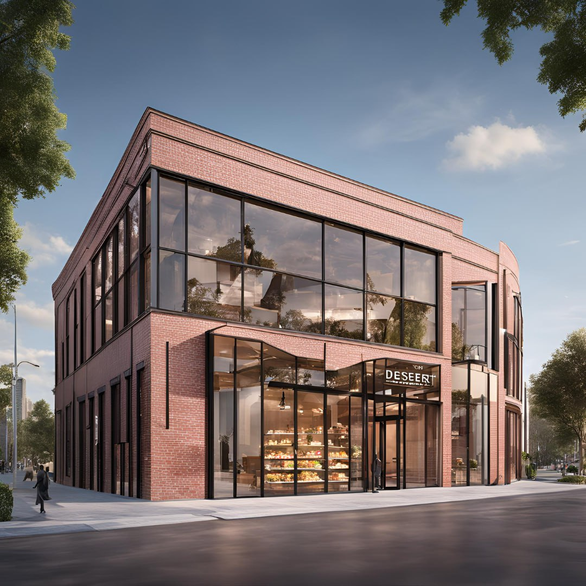

<html>
<body>
</body>
</html>
<!DOCTYPE html>
<head><title>About</title></head>
<body>
<header>
<style>
     body{
	  background-image:url("gam2.jpg");
	  background-repeat: no-repeat;
	  background-attachment: fixed;
	  background-size: cover;}
</style>

<head>
<meta name="viewport" content="width=device-width, initial-scale=1">
<style>
body {
  margin: 0;
  background-color: #f1f1f1;
  font-family: Arial, Helvetica, sans-serif;
}

#navbar {
  background-color: #445688;
  position: fixed;
  top: -50px;
  width: 100%;
  display: block;
  transition: top 0.3s;
}

#navbar a {
  float: left;
  display: block;
  color: #f2f2f2;
  text-align: center;
  padding: 15px;
  text-decoration: none;
  font-size: 17px;
}

#navbar a:hover {
  background-color: #8E80CF;
  color:black;
}
</style>
</head>
<body>

<div id="navbar">
<td><a href="index.html">Home</a></td>
<td><a href="about.html">About</a></td>
<td><a href="char.html">Organization Chart</a></td>
<td><a href="prod.html">Products</a></td>
<td><a href="price.html">Price</a></td>
<td><a href="contact.html">Contact</a></td>

</div>

<div style="padding:15px 15px 100px;font-size:30px">
 </div>

<script>
// When the user scrolls down 60px from the top of the document, slide down the navbar
window.onscroll = function() {scrollFunction()};

function scrollFunction() {
  if (document.body.scrollTop > 20 || document.documentElement.scrollTop > 20) {
    document.getElementById("navbar").style.top = "0";
  } else {
    document.getElementById("navbar").style.top = "-50px";
  }
}
</script>


<h1 style="font-family:Georgia; font-size:50px; text-align:center;">About Our Company</h1>
<center></center>

</header>

<h1 style="background-color:white; font-family:broadway; text-align:center; color: grey;">Background</h1>
<ul>
<center></center>

<p><h2 style="font-family:Serif; text-align:center; color: white;">Heavenly Bites is a company that sells a variety of mouth-watering deserts in the town. Founded in 2015, Heavenly Bites has established itself as a premier desert company renowned for its exquisite creations and unparalleled quality. Nestled in the heart of Wilayah Persekutuan Kuala Lumpur, Malaysia, Heavenly Bites began with a passion for crafting desserts that are not just treats, but experiences that tantalize the senses and create lasting memories.</h2></p>

<center></center>


<p><h2 style="font-family:Serif; text-align:center; color: white;">Heavenly Bites is a great name for our dessert bite business because it evokes a sense of indulgence and pleasure, which aligns well with the decadent nature of dessert bites. The word "heavenly" suggests that our dessert bites are a divine treat that will delight the senses. The name is short, catchy, and easy to remember. It stands out from more generic bakery names and will help our brand stick in customers' minds.</h2></p>

<center></center>

<p><h2 style="font-family:Serif; text-align:center; color: white;">"Bites" is an appropriate descriptor for our product, as it highlights the bite-sized portions that are perfect for snacking or entertaining. The name is versatile and can be used across various marketing materials, from packaging to social media. It has a strong visual component that can be incorporated into our branding. Heavenly Bites is unique and not overly common for dessert businesses, helping our brand differentiate itself in the market.</h2></p>

<center></center>

<p><h2 style="font-family:Serif; text-align:center; color: white;">Overall, Heavenly Bites is an excellent choice that captures the essence of our cake bite business, is memorable and appealing to customers, and has strong branding potential. It's a name that will help our business stand out and succeed in the competitive dessert market. Heavenly Bites has five outlets including its main outlet in Wilayah Persekutuan. Other outlets are located at Alor Setar, Kuantan, Kota Bharu, and Johor Bahru. This company has a total of 100 staff where each outlet has 30 staff.</h2></p>


<hr>
<footer>
Copyright &copy; H.Bites 2024-2025
</footer>


</body>
</html>